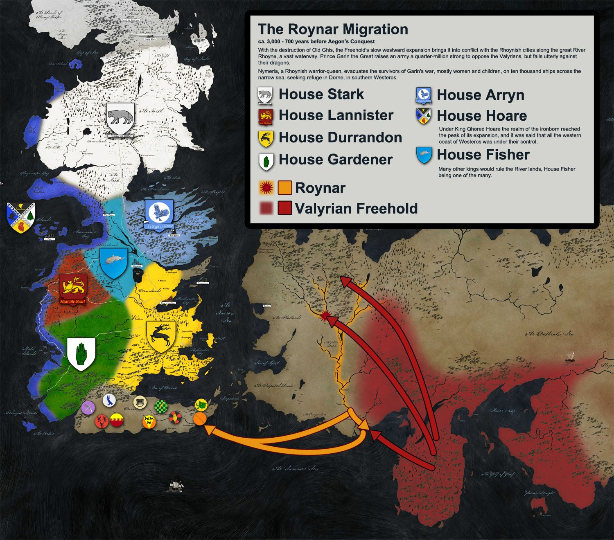
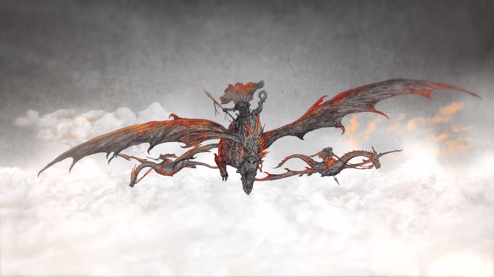

A History of Westeros
Twelve thousand years ago, Westeros was inhabited by the diminutive Children of the Forest, a nonhuman race who lived in peace and harmony with nature, worshipping the Old Gods of the Forest. The First Men, a human ethnic group, invaded Westeros across the Arm of Dorne, armed with weapons of bronze. In a significant military conflict, in which the Children allegedly destroyed the Arm of Dorne with magic (resulting in the Stepstone islands) and flooded the Neck, the two sides fought to a standstill and made a pact of friendship and alliance. The First Men adopted the worship of the old gods at this time.
Two thousand years after the Pact, Westeros was invaded by the White Walkers during a winter that lasted for a generation. In the War for the Dawn, they were defeated by an alliance of the First Men and the Children, though only at grievous cost. The Children disappeared from Westeros at this time. Brandon Stark, known as Bran the Builder, raised the Wall to bar the White Walkers from returning and founded the Night's Watch to guard it. He also built the castle of Winterfell and established House Stark as the ruling house of the Kingdom of the North with himself as the first King in the North. Two thousand years later, the Andals invaded Westeros from across the Narrow Sea, landing in the Vale and sweeping across the continent. The Andals conquered the southern half of the continent but failed to seize the North, being thrown back several times at the defensive chokepoint of Moat Cailin. A patchwork of numerous small Andal kingdoms took shape across the south, eventually coalescing into several larger nations.
A thousand years ago, the Rhoynar, the warrior-people of the upper Rhoyne (a river network on Essos), fell into warfare with the mighty Valyrian Freehold The Valyrians destroyed the Rhoynar cities using dragons. Nymeria, warrior-princess of the Rhoynar, led her people across the Summer Sea in ten thousand ships to land in Dorne. Making an alliance with King Mors Martell of Sunspear, Nymeria conquered the myriad small kingdoms and lordships of Dorne to establish a powerful, proud and independent principality (though a kingdom in all but name).
Four centuries ago, Valyria was destroyed in a volcanic cataclysm, the Doom. A century later, the scions of House Targaryen, the last Valyrian noble family and the last with dragons, who ruled the Valyrian trading outpost on the island of Dragonstone, invaded Westeros with a small army and three dragons. Aegon Targaryen accepted the fealty of six kingdoms and forged the Iron Throne, while several generations later his descendants were able to bring Dorne into the union through a peaceful alliance, hence the term "Seven Kingdoms".
For centuries the Seven Kingdoms have been shaped by rebellion and war. However, through civil wars and the loss of their dragons to time and conflict, the Targaryens ruled the entire continent (bar the lands beyond the Wall) for over 280 years with relative peace and stability (bar the aforementioned rebellions and wars that would occasionally break out) until the actions of the Mad King, Aerys II Targaryen, triggered the civil war known as Robert's Rebellion. At the end of this civil war, Aerys II and most of his family were slain and his surviving children, Viserys and Daenerys, fled into exile in the Free Cities. Robert Baratheon took the throne and at the start of the series has ruled for seventeen years.

Socialize with the Masses